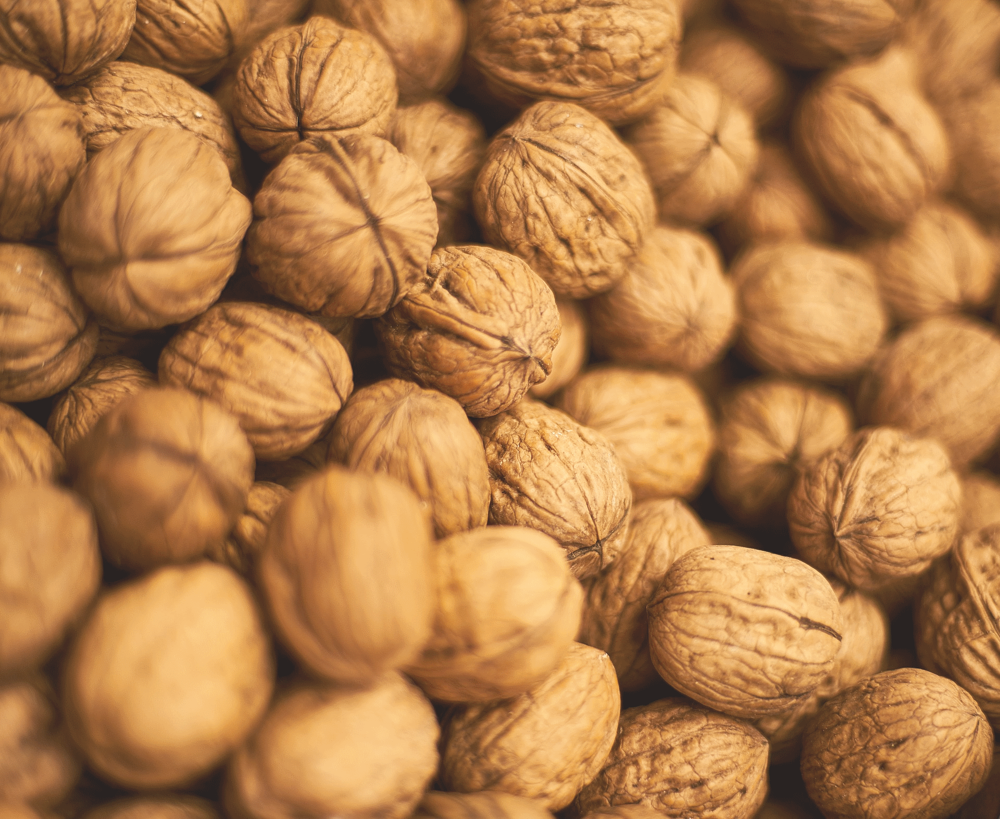

Українська селекція
- Буковинська бомба
Сорт відзначається помірною, щорічною урожайністю, порівняно стійкий до марсонії. Дерево сильноросле. Жіночі квіти цвітуть в середині травня, на 5-6 днів пізніше чоловічих. Плодоношення верхівкове. Плоди формуються на верхівкових бруньках. Плоди крупні (17,4-18,2 г), округло-циліндричної форми. Урожайність 38 кг/дер (вік дерева 65 років). Шкаралупа товста, але роздушується легко. Внутрішні перегородки тонкі, легко відокремлюються від ядра. Ядро складає 47,5-48,2% від маси плоду. В ядрі міститься: жирів 67,27-69,59%, білків 12,42-15,88%, цукрів 8,85-13,8%, органічних кислот 0,38-0,46%, дубильних речовин 0,57-1,43%, пектинів 0,31-1,0%, вітаміну С 2,58-3,74 мг на 100 г повітряно-сухої маси. Знімальна стиглість плодів настає в кінці вересня – на початку жовтня.
- Буковинський 1
Сорт відзначається високою і стабільною урожайністю, відносностійкий до марсонії. Дерево утворює помірної величини крону, з інтенсивною закладкою плодових бруньок. Цвітіння жіночих та чоловічих квіток проходить на початку травня, з невеликим випередженням розкриванням пильників. Плодоношення латеральне. Плоди формуються не тільки на верхівкових, але й на 2-3-х бокових бруньках минулорічних приростів. Плоди середньої маси (10,1-14,1 г), округлі. Урожайність 122 кг/дер (вік дерева 65 років). Шкаралупа тонка, легко роздушується. Внутрішні перегородки тонкі, не перешкоджають видаленню ядра. Ядро від оболонки цілим відокремлюється вільно. Вихід ядра 52,4% т. Ядро містить: жирів 70,12-73,13%, білків 14,04-15,93%, цукрів 7,15-8,84%, органічних кислот 0,38-0,51%, дубильних речовин 0,27-1,33%, пектинів 0,31-0,94%, вітаміну С 2,8-4,4 мг на 100 г повітряно-сухої маси. Знімальна стиглість плодів настає в середині вересня.
- Буковинський 2
Сорт відзначається стабільною, високою урожайністю і стійкістю до марсонії. Дерево утворює велику крону. Жіночі квітки цвітуть 4-12 травня, раніше чоловічих. Плодоношення верхівкове. Плоди утворюються на верхівках минулорічних приростів, крупні (13,7-15,4 г), видовжено-еліптичної форми. Урожайність 75 кг/дер (вік дерева 85 років). Оболонка середньої товщини, міцна. Ядро складає 48,08-49,24% від маси плоду. В ядрі міститься жирів 68,13-70,51%, білків 15,0-17,52%, цукрів 7,16-10,2%, органічних кислот 0,39-0,48%, дубильних речовин 0,86-0,96%, пектинів 0,69-1,29%, вітаміну С 3,01-3,96 мг на 100 г повітряно-сухої маси. Знімальна стиглість плодів настає в кінці вересня – на початку жовтня.
- Легінь
Сорт відзначається скороплідністю, стабільною і помірною урожайністю, великими плодами і стійкістю до марсонії. Дерево середньо росле, утворює розлогу крону. Жіночі квітки цвітуть в середині травня, чоловічі на 7 днів пізніше. Плодоношення верхівкове. Утворення плодів починається на 2-3 рік після садіння. Урожайність з маточного дерева віком 22 роки складає 58 кг. Плоди утворюються на верхівках минулорічних приростів, крупні (19,7г), трапецієвидної форми форми. Товщина оболонка 1,4 мм. Ядро світле, складає 51,6% від маси плоду, виділяється легко. Знімальна стиглість плодів настає в кінці вересня – на початку жовтня.
- Клішківський
Сорт високоврожайний, відносно стійкий до марсонії. Дерево утворює велику крону. Жіночі квітки цвітуть на початку травня, раніше чоловічих на 4-5 днів. Плодоношення верхівкове. Плоди формуються на верхівкових бруньках минулорічних приростів. Плоди середньої маси – 10,9-13,3 г, видовжено-овальної форми. Урожайність 70 кг/дер (вік дерева 85 років). Оболонка середньої товщини, міцна. Внутрішні перегородки тонкі. Ядро складає 48,85-49,96% від маси плоду, містить: жирів 67,4-71,04%, білків 14,36-15,78%, цукрів 8,24-9,6%, органічних кислот 0,4-0,54%, дубильних речовин 0,71-0,86%, пектинів 0,88-1,31%, вітаміну С 3,66-5,06 мг на 100 г повітряно-сухої маси. Знімальна стиглість плодів настає в кінці серпня – на початку вересня.
- Рудківський
Сорт відзначається високими товарними якостями горіхів та високою стабільною врожайністю. Дерево утворює велику округлу крону. Починає плодоносити на 3-4 рік після садіння, на 36рік дає урожай 45кг/дер. Плодоношення верхівкове. Плоди формуються на верхівках минулорічного приросту. Знімальна стиглість наступає в другій – третій декаді вересня Сорт толерантний до ураження хворобами., Плоди масою – 13,6 – 14,1 г, ядро виділяється легко і складає 49,5% - 50,3% від загальної маси плоду, містить: жирів – 70,54%, білків – 15,61%, вуглеводів – 8,23%. Шкаралупа тонка – 1,0-1,3 мм, легко розколюється. Використання в харчовій та медичній промисловості.
- Чернівецький 1
Сорт високоврожайний, регулярно плодоносить, стійкий до марсонії. Дерево утворює велику крону. Жіночі квітки цвітуть на початку травня, раніше чоловічих. Плодоношення латеральне. Плоди формуються на верхівкових та бокових бруньках, округлої форми. Маса плодів складає 10,6-12,8 г. Оболонка тонка, легко роздушується. Урожайність 70 кг/дер (вік дерева 36 років). Внутрішні перегородки тонкі, легко відокремлюються від ядра. Вихід ядра 50,7-54,6% від маси плоду. В ядрі міститься жирів: 68,42-70,8%, білків 15,85-16,86%, цукрів 7,02-9,37%, органічних кислот 0,38-0,43%, дубильних речовин 0,53-0,64%, пектинів 0,66-0,8%. Знімальна стиглість плодів настає в середині вересня.
- Чернівецький 2
Сорт відзначається високою і стабільною врожайністю, високими товарними якостями горіхів. Сорт толерантний до ураження хворобами. Дерево утворює велику, округлу крону. Починає плодоносити на 4 рік після садіння, на 36 рік дає урожай 92кг/дер. Плодоношення верхівкове. Плоди формуються на верхівках минулорічного приросту. Знімальна стиглість наступає в другій – третій декаді вересня. Плоди масою – 14,7-17,4 г видовжено еліптичної форми. Ядро виділяється легко і складає 50,1% - 50,3% від загальної маси плоду, містить: жирів – 69,68%, білків – 26,53%, вуглеводів – 7,91%. Шкаралупа тонка – 1,0-1,3 мм,з гладкою поверхнею, легко розколюється. Використання в харчовій та медичній промисловості.
- Яблунівський
Сорт відзначається високою, стабільною врожайністю, високими товарними якостями горіхів, раннім строком достигання. Сорт толерантний до ураження хворобами. Дерево утворює невелику округлу крону. Починає плодоносити на 3-4 рік після садіння. Плодоношення верхівкове. Плоди формуються на верхівках минулорічного приросту. Урожайність 120кг/дер (вік дерева 36 років). Знімальна стиглість наступає в першій – другій декаді вересня. Плоди масою – 10,2 г округлої форми, ядро виділяється легко і складає 50,0% - 53,0% від загальної маси плоду, містить: жирів – 70,02%, білків – 16,44%, вуглеводів – 8,20%. Шкаралупа тонка – 0,9 мм, з гладкою поверхнею, легко розколюється. Використання в харчовій та медичній промисловості.
- Ярівський
Cорт відзначається високою, стабільною урожайністю, відносною стійкістю до ураження марсонією. Дерево утворює невелику округлу крону. Жіночі квітки цвітуть 11-19 травня, пізніше чоловічих. Плодоношення верхівкове. Плоди формуються на верхівкових бруньках минулорічного приросту. Плоди крупні. Урожайність 63 кг/дер (вік дерева 36 років). Шкаралупа тонка, легко роздушується. Внутрішні перегородки тонкі. Вихід ядра 50-53%. Ядро містить: жирів 68,22-70,76%, білків 12,9-15,74%, цукрів 7,9-11,7%, органічних кислот 0,36-0,54%, дубильних речовин 0,43-1,17%, пектинів 0,21-1,47%, вітаміну С 3,01-4,37 мг на 100 г повітряно-сухої маси. Знімальна стиглість плодів настає в кінці вересня.